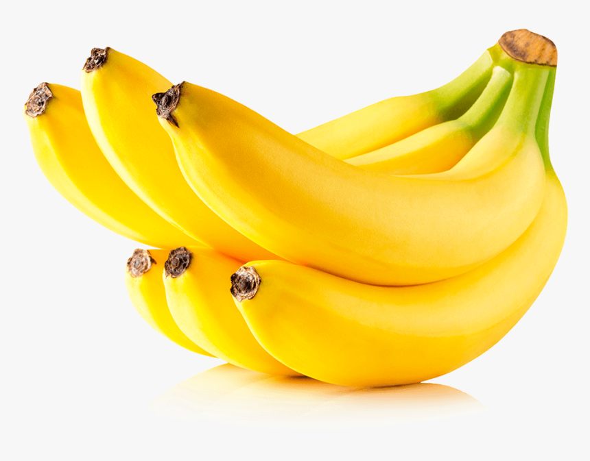

tentangbuah.com

Pisang

Pisang adalah nama umum yang diberikan pada tumbuhan
terna berukuran besar dengan daun memanjang dan besar yang tumbuh
langsung dari bagian tangkai. Pisang memiliki daun bertangkai yang
berpencar dan mudah robek dengan bagian batang yang meruncing. Ukuran
daun pada tiap spesies pisang juga berbeda-beda. Tangkai pisang
menghasilkan bunga dalam jumlah yang banyak. Bagian bunga pada pisang
akan membentuk buah yang disebut sisir. Buah pisang berkelompok dalam
satu bunga majemuk dengan ukuran yang makin ke bawah makin mengecil.
Dalam taksonomi, pisang termasuk dalam genus Musa dan famili Musaceae.
Pada awalnya pisang merupakan tumbuhan asli yang berasal dari kawasan
Asia Tenggara, kemudian menyebar ke seluruh wilayah dunia. Dari arah
barat, pisang menyebar mulai dari Samudra Atlantik menuju ke Pulau
Madagaskar lalu ke Benua Afrika dan menuju ke Amerika Latin dan Amerika
Tengah. Sementara itu, pisang menyebar dari arah timur melalui Samudra
Pasifik menuju ke Hawaii.
Pisang adalah buah yang dikenal luas di Indonesia. Buah pisang bisa
dinikmati dengan berbagai cara: dimakan langsung, digoreng, dikukus,
atau diolah bersama bahan lain. Tapi pisang tidak hanya enak, manfaatnya
banyak.
Berikut merupakan berbagai manfaat dari pisang :
- Sumber Karbohidrat dan Vitamin A
- Melancarkan Aliran Oksigen ke Otak
- Pisang sebagai Mood Food
- Menurunkan Berat Badan
- Membantu Atasi Hipertensi
- Membantu Merawat Kulit
Daftar Harga
| Jenis Pisang | Harga | |
|---|---|---|
| Per Kilo | Per Biji | |
| Pisang Raja | 80.000 | 8.000 |
| Pisang Ambon | 60.000 | 6.000 |
| Pisang Tanduk | 58.000 | 5.800 |
| Pisang Mas | 75.000 | 7.500 |